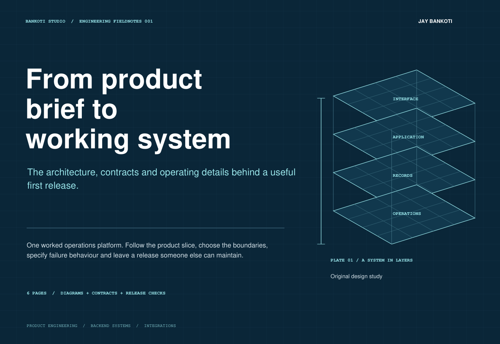

01 / PRODUCT & BACKEND / 6 PAGESFrom product brief
From product brief
to working system
Follow one customer-operations platform from its first useful workflow through architecture, API contracts, access rules and a controlled release.
Includes a system map, three endpoint contracts, an uncertain-send timeline and specific acceptance evidence.
Read the engineering fieldbook